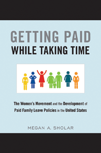

<body bgcolor="#FFFFFF" text="#000000" link="#0000FF" vlink="#CC0000" alink="#CC0000"><center><hr width="350" size="1" align="center" noshade>Analyzing family leave policy in the United States-from the role of the women's movement in the passage of paid leave to policymaking at the state level<hr width="350" size="1" align="center" noshade><p><a href="https://cdcshoppingcart.uchicago.edu/Cart/ChicagoBook.aspx?ISBN=&&PRESS=temple" target="_top">Buy this book!</a> | <a href="https://cdcshoppingcart.uchicago.edu/Cart/Cart.aspx?PRESS=temple" target="_top">View Cart</a> | <a href="https://cdcshoppingcart.uchicago.edu/Cart/Cart.aspx?PRESS=temple" target="_top">Check Out</a></p><p></p></center><!--none//--><h1 class = "booktitle">Getting Paid While Taking Time</h1> <h1 class = "subtitle">The Women's Movement and the Development of Paid Family Leave Policies in the United States</h1>
<h3>Megan A. Sholar </h3>
paper: $29.95, Aug 16<BR>EAN:&nbsp;978-1-4399-1295-9<BR><font color=#990033>Available</FONT><font size=-7><br>&nbsp;</font></p><p class="info">cloth: $94.50, Aug 16<BR>EAN:&nbsp;978-1-4399-1294-2<BR><font color=#990033>Available</FONT><font size=-7><br>&nbsp;</font></p><p class="info">e-book: $29.95, Sep 16<BR>EAN:&nbsp;978-1-4399-1296-6<BR><font color=#990033>Available</FONT><font size=-7><br>&nbsp;</font></p></p></td></tr></table>
<BR> <p class="info">252 pp<BR> 5.5 x 8.25<BR> 3 tables <p class="info"><font size=-7>&nbsp;</font></p><p class="info">
</P><BLOCKQUOTE><p><i>"</i>Getting Paid While Taking Time <i> </i><i>is a very refreshing book: timely, thoughtful, thorough, well-referenced, well-organized, and well-written. Sholar covers important and necessary historical details and captures the complexities of state government quite well. In addition, her coverage of the women activists groups, the challenges they faced, and the strategies they employed is new and important for readers to learn. This book represents a much-needed update on the status of paid leave in the United States</i>."<br/>-<b>Steven K Wisensale</b>, Professor of Public Policy, Human Development and Family Studies at the University of Connecticut<br>
</BLOCKQUOTE>
<p>The United States remains the only industrialized nation in the world that does not provide paid family leave at the national level for either men or women. In the more than two decades since the passage of the Family and Medical Leave Act, there have been numerous unsuccessful attempts to expand family leave benefits nationally. However, in the United States, it is common for innovations in family policies to arise at the state level.<br/><br/>In her timely book, <i>Getting Paid While Taking Time, </i>Megan Sholar explains the development of family leave policies at both the national and state levels in the United States. She provides cogent studies of states that have passed and proposed family leave legislation, and she pays special attention to the ways in which women's movement actors and other activists (e.g., labor unions) exert pressure on public officials to help influence the policymaking process. In her conclusion, Sholar considers the future of paid family leave policies in the United States and the chances for it ever equaling the benefits in other countries.<br>
<P CLASS="top"><A HREF="#top">BACK TO TOP</A></P>&nbsp;<h2 class="inpageheading"><A NAME="excerpt"></a>Excerpt</h2><p><A HREF="http://www.temple.edu/tempress/chapters_1800/2379_ch1.pdf"> <br/>Read an excerpt from the Introduction (pdf).</A><br>
<P CLASS="top"><A HREF="#top">BACK TO TOP</A></P>
<BR>&nbsp;
<h2 class="inpageheading"><A NAME="reviews"></a>Reviews</h2>
<p><i>"</i>Getting Paid While Taking Time <i> investigates the puzzle of why the U.S. lacks a paid parental leave, being one of the few countries in the world without one. Examining both the state and national levels, and taking the long historical arc of policy-making into consideration, Sholar offers an original and persuasive account that shows how the women's movement has influenced these policies. Sholar marshals strong evidence and sheds new light on this vitally important policy area</i>."<br/>-<b>Kimberly J. Morgan</b>, Professor of Political Science and International Affairs at the George Washington University<br>
<P CLASS="top"><A HREF="#top">BACK TO TOP</A></P>&nbsp;<P>
<h2 class="inpageheading"><A NAME="contents"></a>Contents</h2><P><span style="font-family: 'Verdana';font-size: 13px;" >Chapter 1: Women&rsquo;s Movements and the Passage of Family Leave Policies <br/>Chapter 2: The Passage of the National Family and Medical Leave Act (FMLA)<br/>Chapter 3: From the FMLA to the FAMILY Act: Family Leave Policy at the National Level since 1993<br/>Chapter 4: Success in the States: Paid Family Leave in California, New Jersey, Rhode Island, and New York<br/>Chapter 5: When Paid Family Leave Fails to Pass in the States: Washington, Oregon, Massachusetts, and Hawaii<br/>Chapter 6: The Future of Family Leave in the United States</span></P>
<P CLASS="top"><A HREF="#top">BACK TO TOP</A></P>
</P><BR>&nbsp;
<H2 class="inpageheading"><A NAME="author bio"></a>About the Author(s)</H2><p><b>Megan A. Sholar </b>is a Lecturer in the Interdisciplinary Honors Program at Loyola University Chicago.<br>
<P CLASS="top"><A HREF="#top">BACK TO TOP</A></P>
<p><h2 class="inpageheading"><a name="subjects"></a>Subject Categories</h2> <p><a href="http://www.temple.edu/tempress/political.html" target="_top">Political Science and Public Policy</a> <br><a href="http://www.temple.edu/tempress/family.html" target="_top">Family Policy</a> <br><a href="http://www.temple.edu/tempress/social.html" target="_top">Community Organizing and Social Movements</a> <br><a href="http://www.temple.edu/tempress/labor.html" target="_top">Labor Studies and Work</a> <br><a href="http://www.temple.edu/tempress/women.html" target="_top">Women's Studies</a> </p>
</p>
<P>
</P>
<p align="center"><a href="https://cdcshoppingcart.uchicago.edu/Cart/ChicagoBook.aspx?ISBN=&&PRESS=temple" target="_top">Buy this book!</a> | <a href="https://cdcshoppingcart.uchicago.edu/Cart/Cart.aspx?PRESS=temple" target="_top">View Cart</a> | <a href="https://cdcshoppingcart.uchicago.edu/Cart/Cart.aspx?PRESS=temple" target="_top">Check Out</a></p><p><font face="Arial" size="1"><a href="copyright.html" onMouseOver="window.status='Web Copyright Policy';return true;" onMouseOut="window.status=''" title="Web Copyright Policy">&copy;</a> 2016 <a href="http://www.temple.edu" target="new" onMouseOver="window.status='Link to Temple University home page';return true;" onMouseOut="window.status=''" title="Link to Temple University home page">Temple University</a>. All Rights Reserved. http://www.temple.edu/tempress/titles/2379_reg.html</font></p>